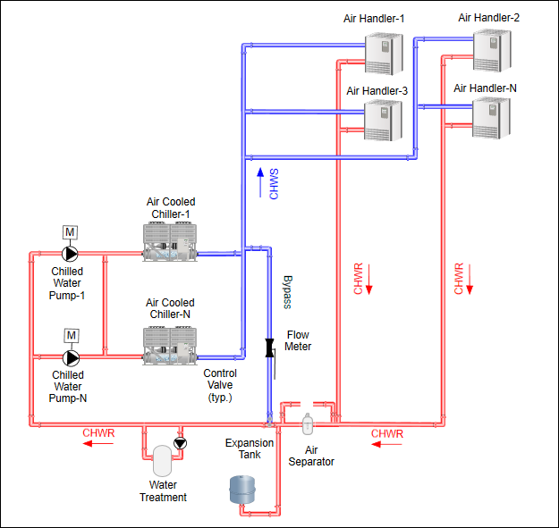

Creating a Pipe Diagram
Scenario
You want to create a .CCG piping diagram based on either a hard copy or an electronic wireframe or blueprint to display your hot and cold water flow. For example:

Use the Graphic Editor’s Pipe and Pipe Coupling elements to draw the pipe objects. There are a number of ways to plan and organize your work and how to approach the diagram. This workflow is merely a suggestion and more a guide on how to use the pipe and pipe coupling elements to achieve the goal of creating a piping diagram.
In planning the graphic, you may consider the following layers:
- Imported wireframe or blueprint, if any.
- Pipe elements – Optionally, you can have two pipe layers: one for hot water pipes and one for the cold water pipes.
- Symbols – Equipment, Pumps, devices, etc.
- Text – Headers, labels for equipment, directional arrows, etc.
The workflow and the order of the steps below are a recommendations on how to draw and construct a pipe diagram--like the example above--and are intended more to familiarize you with the piping elements and how best to work with them.
For overall background information see: